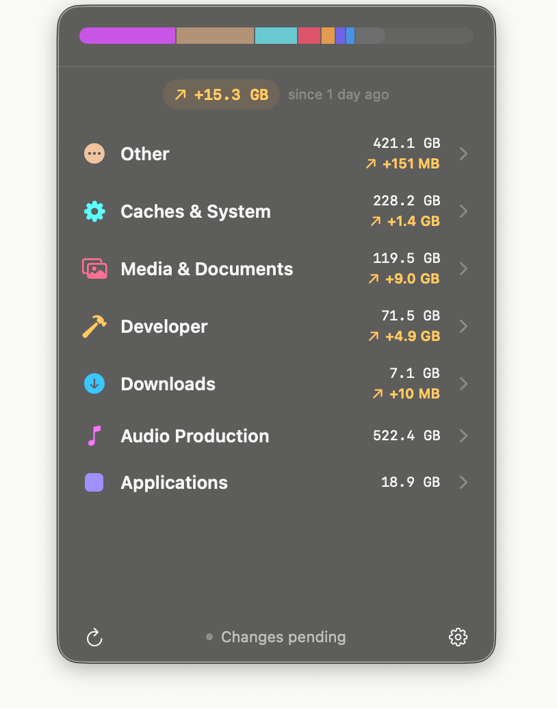

Prunr · next weeks
Fix the number first.
The scan is fine. The growth figure in the menu can be wrong. Do not build a new screen on it.
-
1
Trust the number. The same bytes can be added twice.
12:01:05compile writes +2 GBkept12:01:40scan adds +2 GB againsame minuteMenu+4 GBuntil that minute ages outA crash can also delete a finished scan, and a failed refresh can drop the paths it was supposed to retry. -
2
Make a rescan cheaper. The tree is written, then copied in full.
Scan the disk→Save snapshot→Copy every row again→Menu updatesOn the way there, every changed path is loaded into memory just to add up a few category totals. -
3
Show capacity honestly. The bar is drawn bigger than the disk.
Used space is drawn at least 42% full. Any category under 3% is stretched to 3%. Photos, Mail, and Trash can be skipped and still look included. -
4
Then Storage vs Changes. Big things are buried under tiny changes.

Same disk, ranked by size
- Audio522 GB
- Other421 GB
- Caches228 GB
- Media120 GB
- Developer72 GB
In the menu, 522 GB of audio sits under a +10 MB download. Storage would put the audio first. Changes keeps the seven-day number as its own view.
Not now: rewriting the menu code, explanations, preview, history, cleanup.